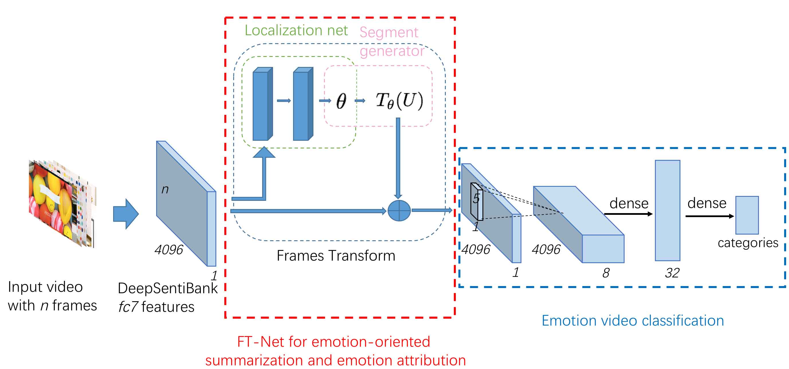

Jiarui GaoI am a first year master student majoring in software engineering at Carnegie Mellon University, Silicon Valley. I received my bachelor's degree in computer science from Fudan University, Shanghai. I was advised by Prof. Yanwei Fu and Prof. Yu-Gang Jiang to work on machine learning and multimedia then. I'm passionate about full-stack software development. Here is my CV.The profile picture is taken by my sweet boyfriend Xingyi Zhou. |
Publication

Frame-Transformer Emotion Classification NetworkJiarui Gao, Yanwei Fu, Yu-Gang Jiang, and Xiangyang Xue
ACM International Conference on Multimedia Retrieval(ICMR), 2017
In this paper, we propose a new architecture–Frame-Transformer Emotion Classi cation Network (FT-EC-net) to solve three highly correlated emotion analysis tasks: emotion recognition, emotion attribution and emotion-oriented summarization. We also contribute a new dataset for emotion attribution task by annotating the ground-truth labels of attribution segments. 

A Multi-task Neural Approach for Emotion Attribution, Classification and SummarizationGuoyun Tu, Yanwei Fu, Jiarui Gao, Boyang Li, Yu-Gang Jiang and Xiangyang Xue
Under review of IEEE Transactions on Multimedia
We propose a new neural approach Frame-Bi-stream Emotion Attribution-Classification Network(BEAC-Net), an end-to-end trainable neural architecture that tackles emotion attribution and classification simultaneously with significant performance improvements. Also we propose an efficient dynamic programming method for video summarization based on the output of A-Net. To establish a good benchmark for emotion attribution, we re-annotate the Ekman-6 dataset with the most emotion-oriented segments which can be used as the ground-truth for the emotion attribution task. |
ExperienceShanghai Key Laboratory of Intelligent Information ProcessingResearch Assistant Supervised by Prof. Yanwei Fu and Prof. Yu-Gang Jiang.
Improved the performance of emotion-oriented video summarization using frame encoding and SVM. Proposed a graph-based approach of fine-tuning word vectors by leveraging information from image contents for zero shot learning and achieved 56.32% accuracy on AwA dataset.
Nov 2015 - Jun 2018
Morgan Stanley, ShanghaiApplication Development Intern in the department of Corporate & Funding Technology
Developed a Java web application for Outside Business Interest system as an effective PoC. Proposed a novel graph algorithm in AngularJS2.0 on front-end to render decision processes with a config- urable set of tree-like rules. Designed a new database schema using DB2 temporary tables on back-end to make history data traceable.
Jul 2017 - Sept 2017
|